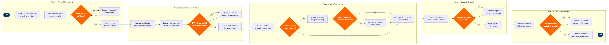

| Step | L4 Step Name | KPI / Target | Pain Point / Risk | Gate |
|---|---|---|---|---|
| 1.1 | Extract layover schedule by station and date | Schedule extraction latency <15 min after pairing publish | Late pairing publication (T-24h or less) leaves insufficient lead time for contracted hotel vendors requiring 48-hr booking notice | |
| 1.2 | Forecast hotel room demand by city | Forecast accuracy ≥90% vs actual bookings week-over-week | IROPS surges at hub stations can exhaust all contracted room blocks within 2 hrs; forecast buffers are static and do not adjust to live weather events | |
| 1.3 | Validate contracted block vs demand forecast | Contracted block coverage ≥95% of forecasted demand | Multi-hub IROPS events simultaneously exhaust blocks across 3–5 cities; no automated cross-city reallocation mechanism exists in current system | ⚠ |
| 2.1 | Auto-generate hotel reservations for pairings | Auto-booking rate ≥98% for standard layovers; zero manual entry for pairings >48 hrs out | API integration gaps with major hotel chain property management systems cause duplicate booking records requiring manual reconciliation 3–4 times per week | |
| 2.2 | Book ground transport for crew arrival and departure | Transport booking confirmed ≥4 hrs before crew arrival; on-time pickup rate ≥97% | Schedule changes within T-2h require emergency vendor calls; dispatch API does not support same-day amendments at 60% of outstations, forcing manual phone coordination | |
| 2.3 | Validate hotel transit time vs FAR 117 rest period | 100% of layovers validated against FAR Part 117 before booking confirmation | Hotels beyond 30-min transport window from airport trigger rest period recalculation under §117.25; legacy hotel contracts predate this requirement and contain non-compliant properties | ⚠ |
| 3.1 | Monitor real-time schedule changes affecting layovers | Change detection latency <5 min from schedule update event | Dec 2022 IROPS demonstrated that cascading schedule changes overwhelm manual monitoring; automated alerting still misses secondary-effect pairings when first-order cancellation triggers re-crewing at a different station | |
| 3.2 | Amend hotel and transport bookings for disruptions | Amendment completion within 30 min of schedule change notification | Hotel cancellation penalty windows (typically 6-hr cutoff) generate no-show charges when flights cancel <6 hrs out; no automated penalty-waiver negotiation tool exists | ⚠ |
| 3.3 | Push updated crew itinerary to mobile devices | Notification delivery rate ≥99.5%; crew acknowledgement ≥95% within 30 min | Crew operating international outstations without cellular data roaming miss push notifications; no fallback SMS gateway for low-connectivity stations is currently integrated | |
| 4.1 | Dispatch transport on actual aircraft block-in | Transport wheels-rolling ≤20 min after block-in; crew at hotel ≤45 min after block-in | ACARS feed latency at 12% of outstations means dispatch is triggered on estimated rather than actual arrival, causing early driver arrival and standby cost or missed crew if delayed | |
| 4.2 | Confirm all crew aboard transport before departure | Crew accounting accuracy 100% before vehicle departs gate area | No electronic crew manifest is scanned at transport boarding; headcount is manual and error-prone, particularly for large widebody arrivals with 12–16 crew members at international stations | ⚠ |
| 4.3 | Source spot-rate hotel for IROPS overflow crew | Overflow booking confirmed <2 hrs from IROPS declaration; spot rate ≤2.5x contracted rate | Current system has no real-time rate cap enforcement for spot bookings; spot-rate hotels during major IROPS events have reached 4x contracted rate with no approval gate, generating significant unplanned cost | |
| 5.1 | Reconcile hotel and transport invoices to bookings | Invoice-to-booking match rate ≥97%; variance items resolved within 10 business days | Hotel vendors routinely apply early checkout penalties and no-show charges not captured in the booking system, requiring Finance to cross-reference Crew Hotel Management System records manually for every disputed line | ⚠ |
| 5.2 | Generate vendor performance scorecard | Vendor SLA compliance ≥95%; crew accommodation satisfaction score ≥4.2 / 5.0 | No structured crew feedback loop exists between hotel stay and vendor management; scores rely on ad-hoc complaints submitted to Crew Control rather than systematic post-stay surveys, understating quality failures |